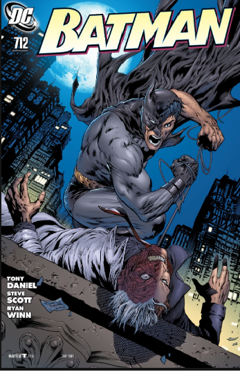
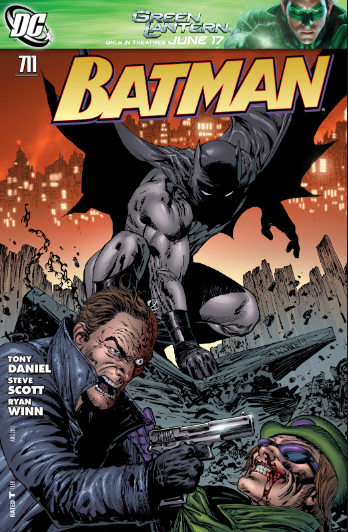
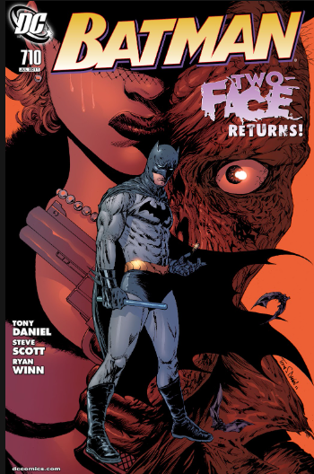

Batman Képregények
Főoldal
Képregények
Galéria
Képregények
Az első képregény

A teljes képregényt elolvashatod a
linkre
kattintva
A második képregény

A teljes képregényt elolvashatod a
linkre
kattintva
A harmadid képregény

A teljes képregényt elolvashatod a
linkre
kattintva